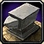

 Para mais informação clique no icon da Profissão
Ferraria é uma das profissões de fusão - requer materiais produzidos com outra profissão, normalmente Mineração.Os ferreiros transformam vários reagentes
(principalmente metais) em armaduras de aço, armas e alguns itens úteis.